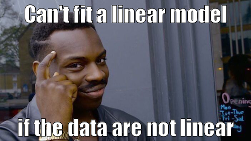
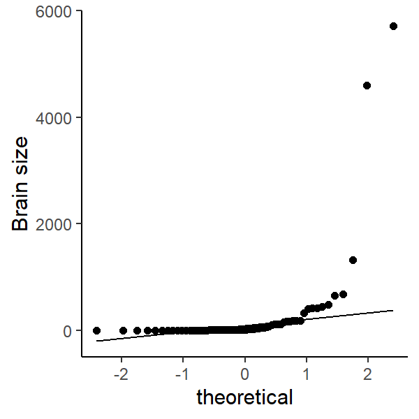
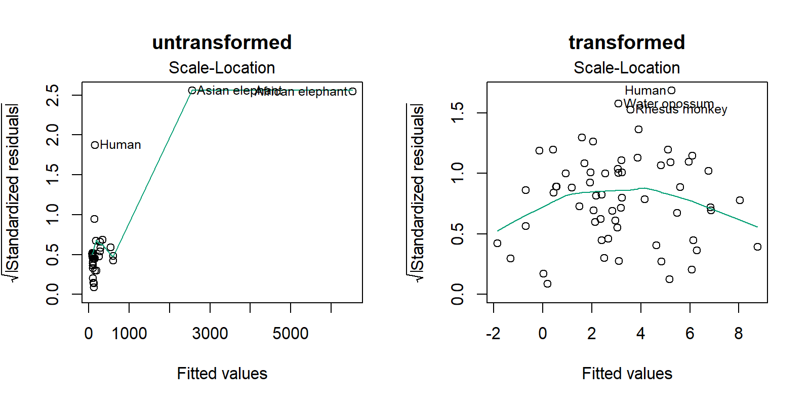
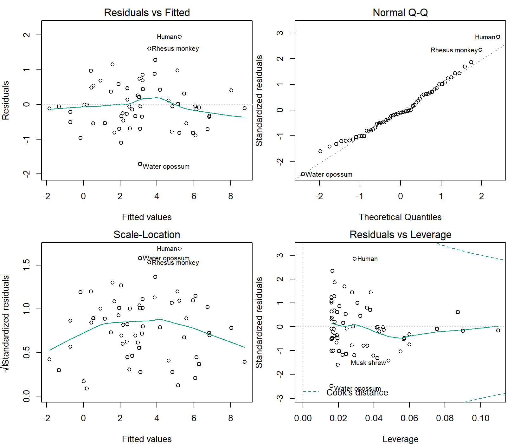
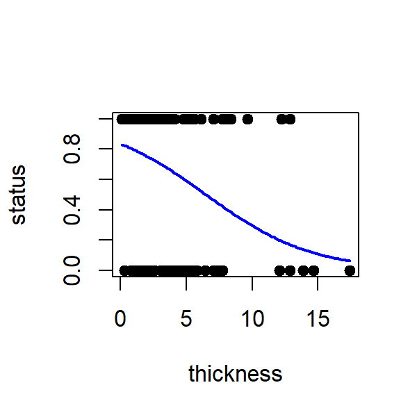
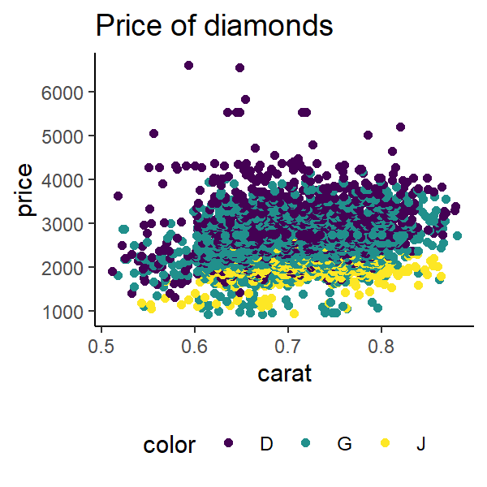
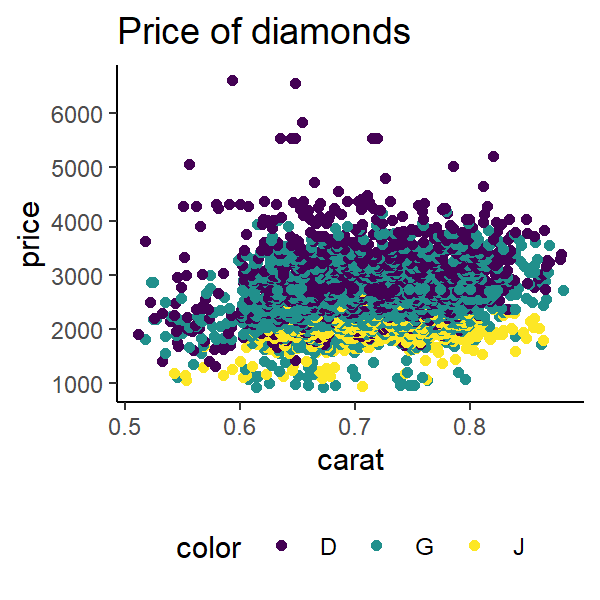

Overall lecture aims
- Identify the structure of general linear models
- Describe how linear models are parametrized
- Understand how to use linear models
- Understand how to interpret and evaluate linear models
Using datasets
Datasets used here are from the package MASS which comes with R. To use any data in MASS, library(MASS) needs to be called first.
By the end of this lecture you should:
- Know how the coefficient of determination is calculated and its interpretation
- Understand the assumptions of linear regression
- Be able to evaluate the appropriateness of a linear model to data based on residual plots
- Be able to identify generalised linear models appropriate for data
- Create residual plots in R
- Conduct a generalised linear model in R
By now you should be comfortable with building and interpreting basic linear models in R
but how do we know whether our model is a “good” one?
We need to evaluate our model. There are a few things we should consider:
- How much variation in the data is explained by the model?
- Are linear models appropriate for our hypotheses?
What does a linear model tell us?
- What will a new value of Y be, given a new value of X?
- Does the population slope \(\beta_1\) differ to 0?
- How much variation in Y can be explained its linear relationship with X?
- Coefficient of determination (\(R^2\))
- Partitioning variance (F ratio)
How much variation in Y can be explained its linear relationship with X?
\[ \frac{Var_{\text{explained by the line}}}{Var_{\text{not explained by the line}}} = Ratio\]
Interpreting ratios:
Ratio > 1 = Line explains more than residual
Ratio ≤ 1 = Line explains very little (null hypothesis)
We need to know the total amount of variation and all possible sources of variation (like the F-ratio & ANOVA)
What is or isn’t explained by the line?
Isn’t: Sum of Squares of the Error (SSY)
The bit not explained by the null (total variation in the data). Remember, the null is \(\bar{y}\) = the mean of Y.
\[SSY = y_i - \bar{y}\]
Isn’t: Sum of Squares of the Residual (SSE)
The bit not explained by the line
\[SSE = y_i - \hat{y_i}\]
Isn’t: Sum of Squares of the Regression (SSR)
How well the line estimates the mean of Y
\[SSR = \hat{y_i} - \bar{y}\]
Notice that since SSY is all variation in the data:
SSY = SSE + SSR
So which bits do we use to evaluate model “fit”?
\[ \frac{Var_{\text{explained by the line}}}{Var_{\text{not explained by the line}}} = Ratio\]
We want the number above the line (nominator) to be larger than the number below the line (denominator), otherwise we cannot be confident that our results are different to randomly generated numbers.
Interpreting ratios:
Ratio > 1 = Line explains more than residual
Ratio ≤ 1 = Line explains very little (null hypothesis)
In other words, we want to know how much varaition is captured by the model relative to the total variation in our data.
What is the error that tells us how much varaition the line is (H1) explaining relative to our null hypothesis (H0)?
SSR - Sum of squares of the regression.
What is the error that tells us the total variation in our data?
SSY - Sum of squares of the error. Sometimes called SST - total sum of squares
So we can evaluate how much varaition the model explains by:
\[\frac{SSR}{SSY} = R^2\]
Why can’t we use SSE as the denominator?
SSE depends on the total variation of Y. We could have more variation simply by having more data but the ratio values are the same. So using sum of squares does not tell us about how much variation is explained by our model in a way that is unbiased.
Coefficient of determination \(R^2\)
This is the proportion of variation that your model (your line) explains
1 = no deviance from line (good)
0 = strong deviance from line (not good)
It is related to correlation coefficients (r). Basically, \(R^2 = r^2\)
R will calculate \(R^2\) for you. Going back the tree height and girth example, the \(R^2\) is 0.27 (Multiple R-squared).
Call:
lm(formula = Height ~ Girth, data = trees)
Residuals:
Min 1Q Median 3Q Max
-12.5816 -2.7686 0.3163 2.4728 9.9456
Coefficients:
Estimate Std. Error t value Pr(>|t|)
(Intercept) 62.0313 4.3833 14.152 1.49e-14 ***
Girth 1.0544 0.3222 3.272 0.00276 **
---
Signif. codes: 0 '***' 0.001 '**' 0.01 '*' 0.05 '.' 0.1 ' ' 1
Residual standard error: 5.538 on 29 degrees of freedom
Multiple R-squared: 0.2697, Adjusted R-squared: 0.2445
F-statistic: 10.71 on 1 and 29 DF, p-value: 0.002758
Conclusion: the model (your fitted line) explains 27 % of total variation in data
But…
- Biological data is messy, thus low \(R^2\) may be biologically acceptable
- Low \(R^2\) does not always mean a bad model
- Consider multiple regression to explain more variance
- but adding more parameters is not always better. Why?
But there are other things to check that are more important!
We make assumptions of the error structure in linear regression (\(\varepsilon\))
Remember:
\[Y_i = \beta_0 + \beta_1 \times X_i + \varepsilon_i\]
- Does not change our estimates of \(\beta_0\) or \(\beta_1\)
- Affects our confidence intervals of the estimate and thus hypothesis testing
- Because \(\varepsilon_i\) is random, our assumptions also apply to the response variable \(y_i\)

Did you know you could make memes in R?
Assumptions of linear regression
Linear models assume that the relationship between the response and predictor is linear. In addition to this main condition, there are 4 assumptions of linear regression:
- Normality
- Homogeneity of Variance
- Independence
- Fixed X
ALWAYS check these assumptions every time you fit a model. No exceptions! No excuses!
Residual plots
In R, we can evaluate models from residual plots:
Model <- lm(Y ~ X, data) # build a model
plot(Model) # show residual plots
There are 4 plots called. In order:
- Residuals vs fitted values
- bits left over vs what the model predicted
- Standardised residual quantile-quantile plot
- what is the spread of the residuals?
- Scale-Location
- like plot 1 but shown differently
- Residuals vs Leverage
- are there any influential data points?
Mammal brain and body size
Let’s look at these assumptions in detail using the relationship between brain mass and body mass for different mammals. The dataset is called
mammals in the
MASS package.
1. Normality
Population Y values and error terms (\(\varepsilon_i\)) are normally distributed for each level of the predictor variable (\(x_i\))
The distribution of the response variable, Y, should be normally distributed (not skewed). We can graphically check this using a histogram of brain size.


Quantile-Quantile plots
- We can also visualise the spread of data with a quantile-quantile plot.
- The linear line is the expected relationship following a normal distribution.
- Do our points follow the line?
- What does it mean when the points don’t follow the line?

The residuals of the model should be also normally distributed
What happens when the data is not normal?
- Collect more data, increase sample size for each level of \(x\). Could be a sampling bias or sample size is too low
- Use a non-parametric test
- e.g. Spearman’s Rank Correlation
- Ignore it (with good reason). Linear regressions are robust to skewness
- Some data are never normal
- e.g. counts - should use Poisson distribution
- Fit another statistical model with more appropriate error structures
- Transform the data
2. Homogeneity of Variance
Population Y values and error terms (\(\varepsilon_i\)) have the same variance for each level of the predictor variable (\(x_i\))
- Related to the assumptions of Normality but more important!
- Look at patterns in standardised residuals:
- Quantile plot
- Relationship with fitted values (predicted Y values from line)
Causes:
- small sample size
- outliers
- non-normally distributed variables
Fixes:
- Have properly designed experiments
- Collect enough data
- Deal with it like as normality
Should expect a normal distribution of standardised residuals
Are there trends in the residual vs fitted values?
Expect no relationship between standardised (or non-standardised) residuals and fitted values of model
- straight line = good
- no humps or valleys

3. Independence
Population Y values and error terms (\(\varepsilon_i\)) are independent
- They do not influence each other (not autocorrelated)
- Often because of inappropriate experimental design
- time series
- pseudo-replication
- repeated measurements
- Increases Type I error
Dealing with independence
Best thing is to choose a different model
Consider using random effects models or choosing better variables (i.e. good experimental design)
4. Fixed X
The predictor variable (\(x_i\)) is fixed. i.e. a known constant
Called Type I model or fixed effects model
- Often broken in biological stats
- Predictor variables can be random
- Called Type II (random effects model)
- Hypothesis testing of Type I applies to Type II
Other regression diagnostics
- How well does the model fit the data?
- Coefficient of determination \(R^2\)
- Is a simple linear regression appropriate?
- e.g. polynomial or curvilinear model
- Are there effects of outliers in the model?
Outliers, leverage and influence
Outliers are abnormal or unusual observations relative to the rest of the data that can cause biases during analysis
- Outliers can be checked before applying a model. How?
- Sometimes caused by experimental error but sometimes significantly different data points are not outliers
- Leverage = how much x influences y
- Influence = how much x influences the slope of the line (Cook’s Distance)
If outliers are caused by experimental error or bias, you could justify excluding it from data.
But never delete observations to force a better model fit
Outliers in the mammal dataset
Putting it all together
These assumptions can be checked by looking at the residual plots. R shows residual plots using the function plot(lm()).

Let’s evaluate the residual plot, starting from the top left:
- Are the residuals vs fitted values equal (i.e. a straight line)? If there are humps or valleys, the model may not be appropriate for the data.
- Are the standardised residuals normally distributed? Linear models assume that residuals are normally distributed. If not, your model is inappropriate for your data or your data is skewed in some way.
- Is there a pattern to your \(\sqrt{\mbox{Standardised residuals}}\)? Linear models assume equal variance so there should be no pattern in your residuals.
- Are there any outlier data points that have strong leverage in the model? E.g. potential outliers or influential data points.
ANCOVA
Remember Analysis of Covariance deals with the effect of two predictor variable, a continuous and categorical variable, on a continuous response variable. Like an ANOVA adjusted for the effect of an additional continuous covariate.
Follows all the assumptions above plus two extra ones:
1. Covariate values cover a similar range across groups
Data from groups should overlap across the range of the continuous variable
If the first assumption is not met, ANCOVA fails to separate the effects of the two predictors on the response variable.
Extending regression models beyond the range of data could be extrapolation and lead to incorrect conclusions.
2. Regression slopes are similar across groups
Like a fixed or additive linear regression.
If the second assumption is not met, you can still fit an “ANCOVA-like” model to the data with different slopes for different groups (i.e. a mixed or random model). Then it’s not a true ANCOVA in the classic sense.
Some data are never normal
- Non-linear data - e.g. exponential growth of bacteria, human populations
- Counts or proportions, number of cells in petri dish, proportion of animals that survive
- Categorical data
Simple linear regressions aren’t the most appropriate for these data and may give distorted results.
But we can use linear regression to analyse these data if we relax our assumptions a bit…called “general linear models”
Generalised linear models
General linear models, or just linear models (LM), refer to linear regression of data following a normal probability distribution, fixed or random. If we do a linear regression on based on a non-normal probability distribution that’s called a generalised linear model (usually abbreviated to GLM).
There are many types but we will briefly describe two common probability distributions:
- Binomial regression - for binomial data following a binomial distribution
- Poisson regression - for count or contingency table data following a Poisson distribution
In R GLMs are done using glm(Y ~ X, data, family = <insert here>). family refers to the underlying probability distribution. Using family = gaussian is the same as lm() for a normal distribution. So:
poisson for a Poisson distributionbinomial for a binomial distribution
But the model outputs are interpreted differently to normal distributions because they link the relationship between the predictor and the response differently.
Poisson regression
- Uses a log linear link function where the response variable (counts) is on a log scale
- Interpretation is similar to lm with estimates for the intercept, slopes and differences in estimates among groups
- Estimates are the log of the expected count as a function of the predictor variables
- Cannot have negative or 0 values because log(0) does not work - must deal with them. How?
- Test overall effects of predictors by comparing models with different predictors representing null and alternative hypotheses
- See later lectures about Chi-Squared tests (\(\chi^2\)).
Number of Oystercatchers (wetland birds) in South Africa
Data is waders from MASS. I have maniuplated the data so it is suitable for analysis - code below.
# create data set of oystercatcher counts (column 1) and site labels
waders <- data.frame(Oystercatcher = MASS::waders[,1],
site = letters[1:15])
# poisson regression
summary(glm(Oystercatcher + 1 ~ site, waders, family = poisson))
Call:
glm(formula = Oystercatcher + 1 ~ site, family = poisson, data = waders)
Deviance Residuals:
[1] 0 0 0 0 0 0 0 0 0 0 0 0 0 0 0
Coefficients:
Estimate Std. Error z value Pr(>|z|)
(Intercept) 2.5649 0.2774 9.248 < 2e-16 ***
siteb 2.0402 0.2948 6.920 4.51e-12 ***
sitec 2.7233 0.2863 9.512 < 2e-16 ***
sited -2.5649 1.0377 -2.472 0.0134 *
sitee 1.7918 0.2996 5.981 2.22e-09 ***
sitef 0.4308 0.3563 1.209 0.2266
siteg 4.3665 0.2791 15.645 < 2e-16 ***
siteh 1.9124 0.2971 6.436 1.23e-10 ***
sitei 4.1058 0.2796 14.683 < 2e-16 ***
sitej 1.8539 0.2983 6.215 5.12e-10 ***
sitek 3.5984 0.2811 12.800 < 2e-16 ***
sitel 1.7918 0.2996 5.981 2.22e-09 ***
sitem 0.5705 0.3470 1.644 0.1001
siten -2.5649 1.0377 -2.472 0.0134 *
siteo -2.5649 1.0377 -2.472 0.0134 *
---
Signif. codes: 0 '***' 0.001 '**' 0.01 '*' 0.05 '.' 0.1 ' ' 1
(Dispersion parameter for poisson family taken to be 1)
Null deviance: 5.3666e+03 on 14 degrees of freedom
Residual deviance: 1.6653e-14 on 0 degrees of freedom
AIC: 114.06
Number of Fisher Scoring iterations: 3
Why did I add 1 to the variable Oystercatcher in the poisson regression?
1 is a dummy variable to remove 0s from the counts - or log(0) will mess up the estimation of parameters
What is the link function for a poisson regression?
(natural) log link
What is the expected number of Oystercatchers at site k?
474 oystercatchers
Remember in linear regression (and by extension GLMs) the Intercept estimate is the estimated coefficient for the first site (site a) and the rest are the difference between site a and the respective site. So for site k you need to add the estimated coefficients together.
Coefficient for k: 2.5649 + 3.5984 = 6.1633
But remember this is log counts so you need to transform it back to regular counts:
exp(6.1633) = 474.993
Then remember we added a dummy variable so you need to subtract that from our estimate:
474.993 - 1 = 473.993 which rounded to the nearest whole number (as counts are discrete variables) is 474!
Binomial (logistic) regression
- Uses a logit link function so the response variable is the log odds
- Estimates are log odds and the probability of an event
- Intercept is log odds of first group
- Estimates for other groups are the ratio of log odds
- Transform from log odds to odds using
exp()
What is the function to conduct an Poisson regression in R?
glm(Y ~ X, data, family = poisson)
Melanoma tumor thickness and survival
Data is Melanoma from MASS. I have maniuplated the data so it is suitable for analysis - code below.
Melanoma <- MASS::Melanoma
Melanoma <- subset(Melanoma, Melanoma$status != 3) # remove observations of other causes of death
Melanoma$status <- Melanoma$status - 1 # create binary variables: 0 = died, 1 = alive
# binary regression
model <- glm(status ~ thickness, Melanoma, family = binomial)
summary(model)
Call:
glm(formula = status ~ thickness, family = binomial, data = Melanoma)
Deviance Residuals:
Min 1Q Median 3Q Max
-1.8588 -1.2162 0.6729 0.7485 1.8844
Coefficients:
Estimate Std. Error z value Pr(>|z|)
(Intercept) 1.61134 0.25496 6.320 2.62e-10 ***
thickness -0.24853 0.06354 -3.911 9.18e-05 ***
---
Signif. codes: 0 '***' 0.001 '**' 0.01 '*' 0.05 '.' 0.1 ' ' 1
(Dispersion parameter for binomial family taken to be 1)
Null deviance: 232.84 on 190 degrees of freedom
Residual deviance: 213.45 on 189 degrees of freedom
AIC: 217.45
Number of Fisher Scoring iterations: 4
plot(status ~ thickness, Melanoma, pch = 19) # plot
# plot binomial regression in blue
newdat <- data.frame(thickness=seq(min(Melanoma$thickness), max(Melanoma$thickness),len=100))
newdat$status <- predict(model, newdata=newdat, type="response")
lines(status ~ thickness, newdat, col="blue", lwd=2)

Is there a relationship between Melanoma tumor thickness (mm) and whether a patient survives?
Yes. The thicker the tumour, the greater the odds of death. The P value of the slope of the binomial regression is significantly different from 0. P < 0.001.
What does the coefficient estimate of -0.24853 for the variable thickness represent?
The estimate represents the log odds of survival as a function of tumour thickness. In other words, we expect the log odds of survival to decrease by 0.25 for a 1 mm increase in tumour thickness.
We can transform log odds to odds by taking the exponential: exp(-0.24853) = 0.7799465. 1 - 0.7799465 = 0.22, so for every 1 mm increase in tumour thickness we expect the odds of survival to decrease by 22 %
What is the probability of survival with a tumor 5 mm thick?
The logit formula is logit = p/(1-p) and the regression equation is logit(p) = 1.61134 - 0.24853 * thickness
so logit(p) = 1.61134 - 0.24853 * 5 = 0.36869
and to turn logit p into probability (p):
p = exp(logit(p))/(1 + exp(logit(p)))
= exp(0.36869)/(1 + exp(0.36869))
= 0.5911424
The probability of surviving is 59 %
Wear suncreeen!
Take home messages
- Always check assumptions
- Interpret model in a biological context
- Biological data is messy: good model can have low R2
- Outliers aren’t always mistakes
- Statistical significance \(\neq\) biological significance
- Is the model appropriate for the question?
- Can my experiment actually test my hypothesis?
- Never delete observations to force a better model fit or fit assumptions



 
